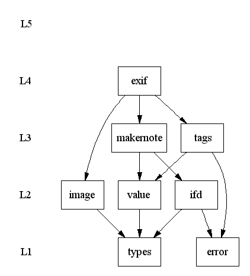

The Exiv2 library is made up of all elements defined in the Exiv2 namespace. The Action and Util namespaces are only used by the Exiv2 command line utility. To learn about the library, concentrate on the members of the Exiv2 namespace.
Exiv2::ExifData is the top-level class of the Exiv2 library. It has a container of Exif metadata and defines related methods. The container holds Exiv2::Metadatum objects. Class Exiv2::Metadatum defines methods to access the information of one Exif tag. It models the tag data as a key and value pair. A key is just a well-formed string. The abstract base class Exiv2::Value defines the interface to access tag information, from which concrete values are derived. The actual value used in a metadatum depends on the type of the Exif tag. It is usually determined when the Exif metadata is read from an image. It is also possible to manually create a Value and together with a key add it to an ExifData container.
Two simple examples demonstrate the basic use of Exiv2 functionality: Exifprint shows how the Exif data of an image can be read and written to the screen. Addmoddel shows how to add, modify and delete Exif metadata. For more real-world code have a look at the implementation of the different actions of the Exiv2 utility (actions.cpp).
Exif Makernote data can be accessed through ExifData in the same way as the standard Exif tags. In other words, for each entry of a known Makernote, there is a corresponding Metadatum in the ExifData container. The abstract base class Exiv2::MakerNote defines the Makernote interface. Subclass Exiv2::IfdMakerNote models makernotes encoded in IFD format. Implementing a new IFD makernote is trivial. Implementing a new makernote that is not encoded in IFD format however, is not. Please contact me if you have such a makernote specification and would like assistance adding it to Exiv2.
Exiv2::Ifd is a generic low-level class that models an image file directory as defined by TIFF and used in the Exif standard. Exiv2::Ifd could be used to implement read only as well as read/write access to Exif (or TIFF) data without the overhead (and convenience) of Exiv2::ExifData.
The following picture shows the components that make up the Exiv2 library and how they depend on each other. The component names are the same as the basenames of their source files. Each component has its own header and source files.
